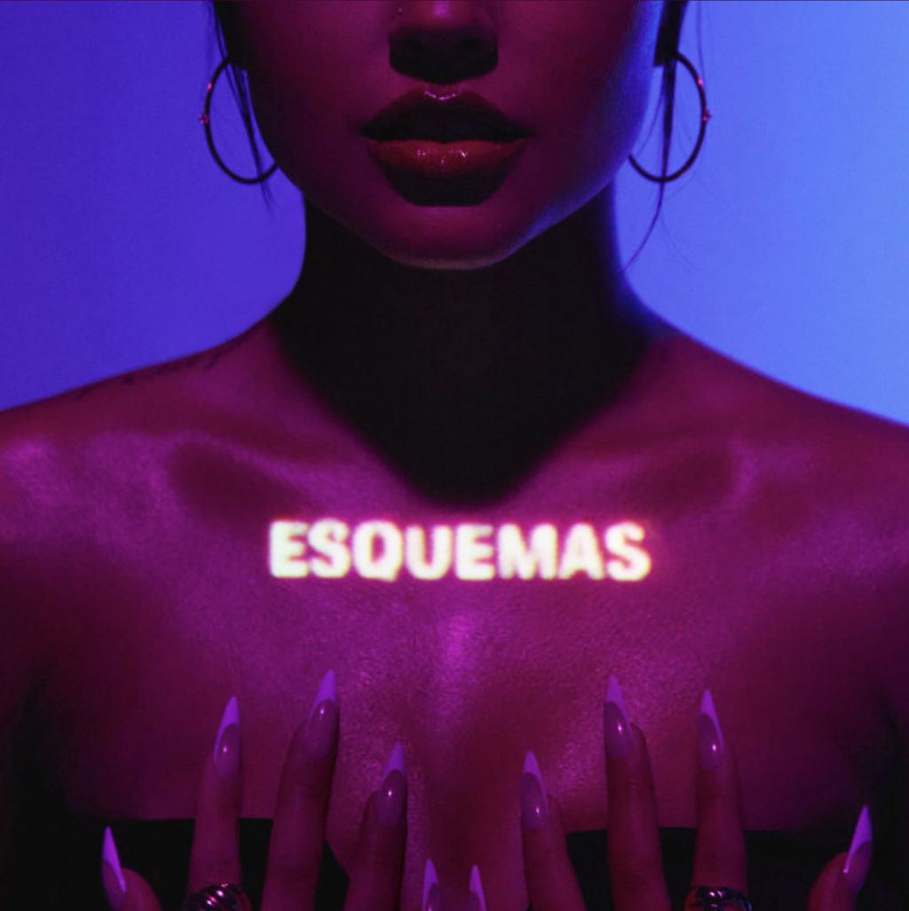
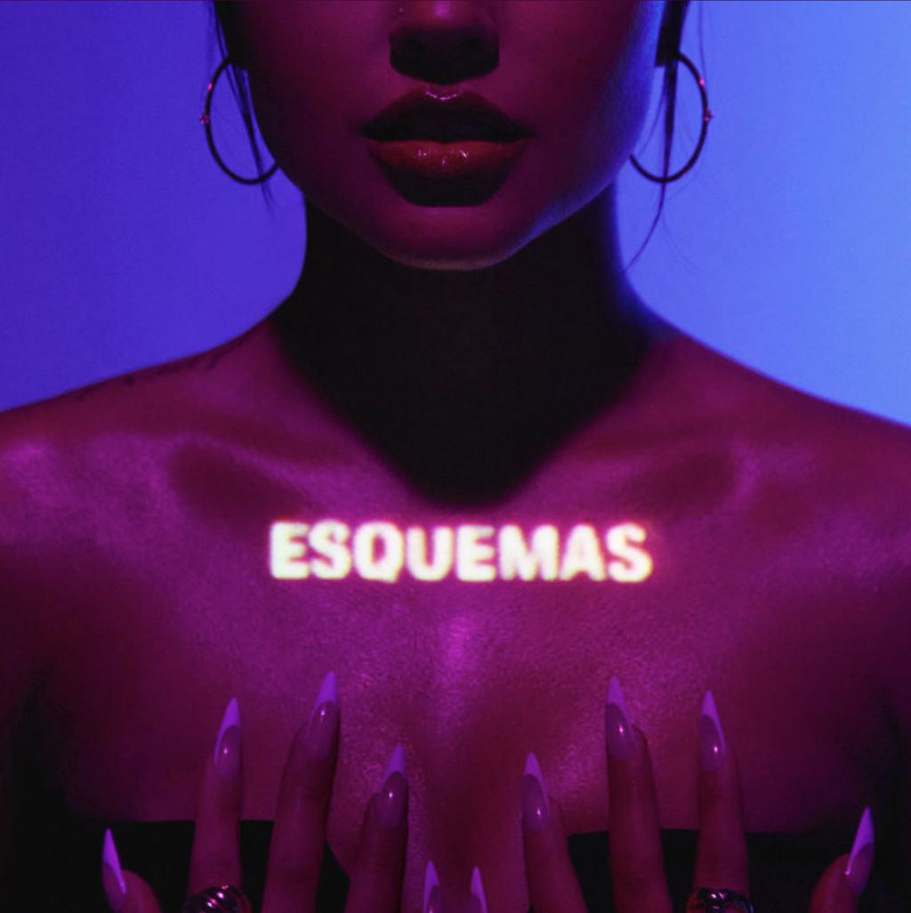
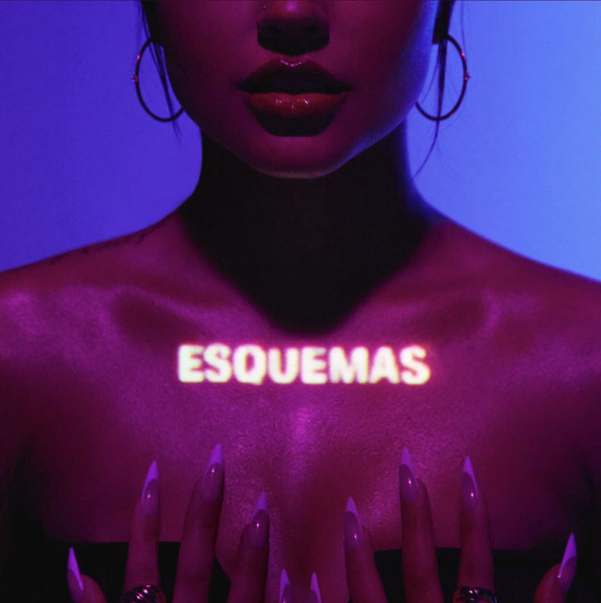
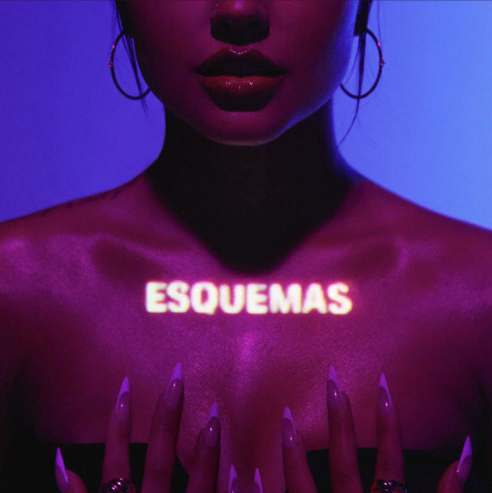

Music. It is a form of expression, it is emotional, and for some, it is personal. Music accompanies a majority of people during their times of celebration, their sorrows, or even their simple past times. Above all, music is unifying—both socially and culturally. In my case, music has been a way for me to identify with my cultural identity. Latin music has shaped the way I listen to music, helping me take pride in my roots and my background. And so, the idea sparked for this project. If latin music was this influential in my life, how has latin music influenced music in general over the past few years? I had many questions from many different perspectives, however, I explored them by looking specifically into latin song tracks, artists, and genres in top hit Spotify playlists. How have latin song tracks influenced music in the past couple years? What about latin artists or latin genres? More specifically, I visualized these patterns for the years 2018 - 2022 in hopes of gaining insight into this question.
I began by investigating latin influence from the perspective of song tracks. Moving through the visualization, notice how latin song tracks have become more influential throughout the years. In 2018, latin song tracks made up 10% of the Spotify top charts playlist. By 2022, latin songs saw a 4% increase and made up 14% of the top charts. It is important to note that although this increase was not entirely linear, latin song tracks saw the most growth in the latest two years. Additionally, the popularity of latin songs increased. In 2018, the most popular latin song had a popularity score of 83/100, while the most popular latin song in 2022 had a score of 90/100. We see this change visually when comparing the length of latin song lines to non-latin song lines. In 2019, no latin song line appears to be the longest comparatively, however, in 2022, a handful of latin song lines appear to be the longest among the playlist. The most popular song between 2018-2022 was a tie between “Me Porto Bonito” by Bad Bunny and “Quevedo: Bzrp Music Sessions, Vol. 52” by Bizarrap and Quevedo in 2022.


Next, I moved into exploring latin influence through the impact of latin artists. For the years 2018 -2022, there were a total of 81 unique artists who had three or more appearances in the Spotify top charts, 11 of which were latin. So overall, latin artists made up approximately 13.5% of the artists in the top charts with three or more appearances. As we analyze the artists by year, the number of latin artists with three or more appearances decreases overtime. This indicates that although many songs are influential in the charts, as observed previously, latin artists tend to produce more “one hit wonders” rather than having a consistent influence on the top charts overtime. Despite this, some latin artists do stay in the top charts for an extended period of time. For example, J Balvin remained in the top charts for 2018, 2019, and 2020 along with Ozuna. Karol G also remained in the top charts for four consecutive years starting in 2019 and made 7 appearances in the charts overall, making her the second most influential latin artist between 2018-2022. The most influential latin artist between 2018 - 2022 was Bad Bunny. Not only did he stay in the top charts across all years, he also appeared in the Spotify top charts a total of 17 times across the five years. So although a majority of latin artists are in the charts briefly, there still exist a handful of latin artists who consistently influence the Spotify top charts.
Finally, I continued this exploration by analyzing latin influence through the effect of latin genres. For the years overall, there were three main latin genres that were seen the most in the Spotify top charts—trap latino, urbano latino, and reggaeton. In these three genres specifically, it can be noted that in 2018 and 2019 there are a few non-latin artists who created a song (or a couple of songs) under these genres. Interestingly enough, the amount of non-latin artists inspired by the 3 main latin genres doubled in 2020 only to decrease to one non-latin artist in the following years. As expected, non-latin artists tend to be influenced by more modern latin genres and are not usually seen releasing songs under a more traditional latin genre like cumbia or pagode baiano. Regardless of this pattern, the number of latin genres influencing the charts over the years had an opposite trend, decreasing in 2019 and 2020, and then increasing in 2021 and 2022. It is clear from these observations that a subset of non-latin artists are influenced by popular latin genres and subgenres in general do have an influence on the Spotify top charts.


Out of curiosity, I thought it would be interesting to see how my personal music taste had been influenced by latin music throughout these specific years. I chose to showcase my genre development as I felt it was the intersection of my song track and artist choices. To the left it can be seen I listened to a majority of non-latin genres in 2018 with only a few latin genres. In 2019, the number of latin genres I listened to decreased slightly and I was still really interested in non-latin music. However, 2020 began my journey into latin music and latin genres. More specifically, I got really into regional Mexican music as that is what my parents grew up listening to. Following this year the number of latin music genres I listened to only increased. However, the last two years were more about exploring different genres outside of the ones I was used to. In 2021, I began exploring the more popular genres such as urbano latino, reggaeton, and trap latino and by 2022 they were my favorite and most preferred genres. In the matter of a couple of years, I went from listening to purely non-latin genres to having latin genres be my sole music taste.
When beginning this project, I had no idea what to expect. However, as I progressed I was delighted to see the influence latin music has had on very popular music charts. Although some patterns are subtle, they exist. I feel proud to know song tracks, artists, and genres I started listening to so long ago have been enjoyed by so many other listeners. This project is not only is a physical representation of the influence music can have on society, but also confirms my earlier point. Music is a form of expression. It is emotional and personal. But most importantly, music is unifying.